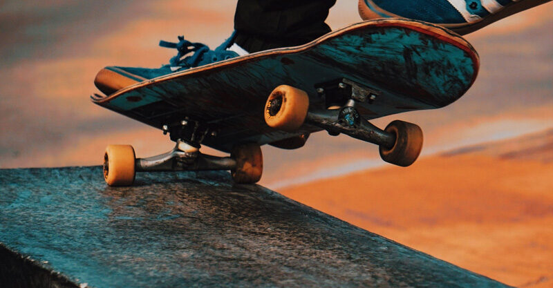
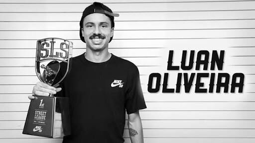

MANOBRAS DE SKATE:

Top 5 Manobras Favoritas:
-
Hard Flip
- Laun Oliveira - Skatista do vídeo.
-
Fs Shove It
- Guilherme Abe - Skatista do vídeo.
-
360 Flip
- Felipe Gustavo - Skatista do vídeo.
-
Fs Flip
- Laun Oliveira - Skatista do vídeo.
-
Flip
- Yuri Facchini - Skatista do vídeo.
Outras Manobras que Eu Gosto:
- Nollie Flip
- Pop Shove It
- Varial heel
- Bs Flip
- Bs Big Spin
Descrição das Top 03 Manobras:
1- Hard Flip:
- O Hardflip é um Frontside Shove It com um Flip. O primeiro Hardflip gravado em vídeo foi feito pelo skatista Daewon Song em 1992 na vídeoparte “Love Child”.
Pela definição de Daewon Song, o Hardflip não gira verticalmente pelo meio das pernas, ao contrário do que muitas pessoas acreditam (esta manobra é comumente confundida com Pressure Flips e Pressure Hardflips).
Fato curioso: No começo, não houve-se um consenso de como chamar esta manobra, então em revistas dos anos 90, você pode encontrar esta manobra com o nome de Frontside Varialflip e de Inside Flip.
2- Fs Shove It:
- Manobra básica, requisito para muitas outras manobras mais avançadas. Consiste em fazer apenas o skate girar 180º graus no sentido Frontside.
3- 360 Flip:
- Uma das manobras favoritas de todos os skaters , consiste em um 360 Varial / Backside Shove It com 1 Flip. Inventada pelo skatista Rodney Mullen em meados dos anos 80, a versão Double Flip desta manobra também foi inventada por ele na mesma época.
Skatista Favorito:

Luan Oliveira:
Luan Vilanova de Oliveira mais conhecido como Luan Oliveira (Porto Alegre, 22 de setembro de 1990) é um skatista profissional brasileiro e um dos mais influentes skatistas da sua geração de skaters no Brasil.